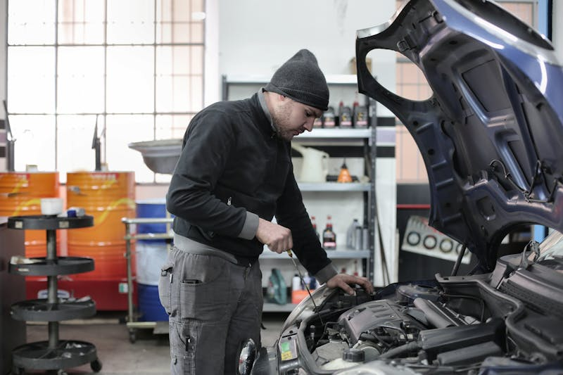

Suspension & Steering Repair
Smooth ride. Safe handling. Iowa roads demand it.
Suspension & Steering Service in Cedar Rapids
Iowa roads aren't gentle on your suspension. Potholes, frost heaves, and rough pavement take a toll on shocks, struts, ball joints, and tie rods. If your car is pulling to one side, bouncing excessively, making clunking noises over bumps, or the steering feels loose, it's time for a suspension inspection at Cedar Automotive.
Worn suspension components don't just make for an uncomfortable ride — they affect your braking distance, tire wear, and vehicle stability. A car with worn shocks can take significantly longer to stop in an emergency. We inspect your entire suspension and steering system, identify what's worn, and replace only what's needed.
We work on suspension systems for all makes and models, from trucks and SUVs to performance cars and European luxury vehicles. Whether it's a simple strut replacement on a Honda Civic or a full air suspension repair on a Mercedes, Cedar Automotive has the tools and experience to get it done right.
Suspension & Steering Services
- Shock absorber replacement
- Strut replacement and strut mount service
- Ball joint inspection and replacement
- Tie rod end replacement
- Control arm and bushing replacement
- Sway bar link and bushing service
- Wheel bearing replacement
- Power steering pump and rack repair
- CV axle and boot replacement
- Air suspension diagnostics (European vehicles)

Why Cedar Automotive for Suspension Work?
Iowa Road Tested
We know what Iowa roads do to suspensions. We see it every day and know exactly what to look for.
Thorough Inspection
We check every suspension and steering component — not just the obvious symptom. Full picture, fair price.
All Vehicle Types
Trucks, SUVs, sedans, and European luxury vehicles. Standard, sport, and air suspension systems.
Related Services
Frequently Asked Questions
What are signs of suspension problems?
Common signs include a bumpy or uncomfortable ride, the vehicle pulling to one side, uneven tire wear, nose-diving when braking, or clunking noises over bumps. Any of these warrant an inspection.
How often should suspension components be checked?
We recommend a suspension inspection every 50,000 miles or if you notice handling changes. Iowa road conditions with potholes and harsh winters can accelerate wear on suspension components.
Do you do wheel alignments?
We diagnose alignment issues and handle the suspension and steering repairs that cause misalignment — ball joints, tie rods, control arms, and more. Proper alignment extends tire life and improves handling.